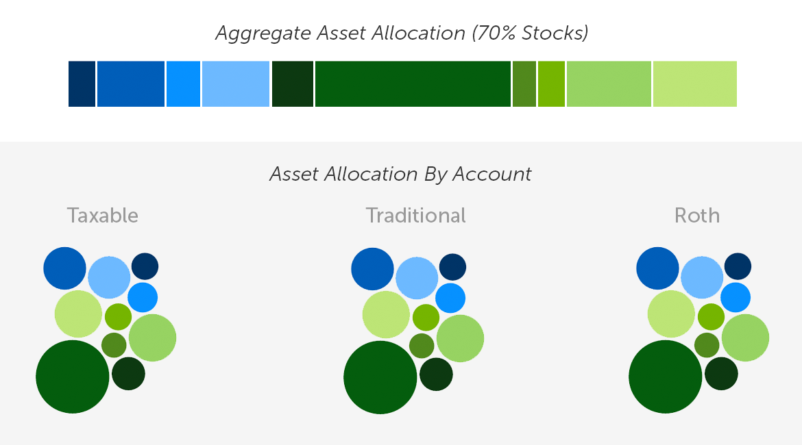
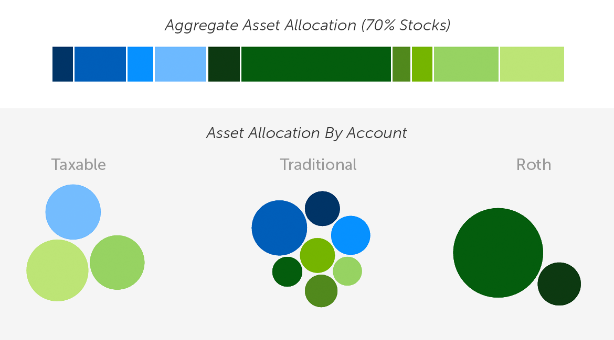
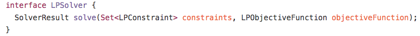
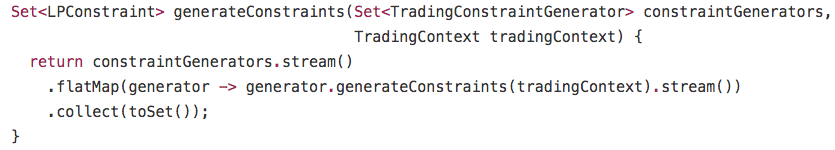
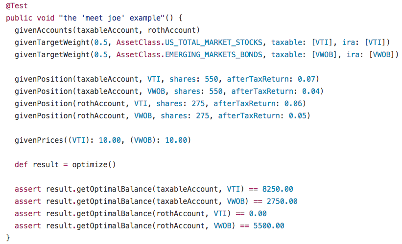

How We Engineered Betterment’s Tax-Coordinated Portfolio™
For our latest tax-efficiency feature, Tax Coordination, Betterment’s solver-based portfolio management system enabled us to manage and test our most complex algorithms.

Tax efficiency is a key consideration of Betterment’s portfolio management philosophy.
With our new Tax Coordination feature, we’re continuing the mission to help our customers’ portfolios become as tax efficient as possible.
While new products can often be achieved using our existing engineering abstractions, TCP brought the engineering team a new level of complexity that required us to rethink how parts of our portfolio management system were built.
Here’s how we did it.
A Primer on Tax Coordination
Betterment’s TCP feature is our very own, fully automated version of an investment strategy known as asset location.
If you’re not familiar with asset location, it is a strategy designed to optimize after-tax returns by placing tax-inefficient securities into more tax-advantaged accounts, such as 401(k)s and Individual Retirement Accounts (IRAs).
Before we built TCP, Betterment customers had each account managed as a separate, standalone portfolio.
For example, customers could set up a Roth IRA with a portfolio of 90% stocks and 10% bonds to save for retirement.
Separately, they could set up a taxable retirement account invested likewise in 90% stocks and 10% bonds.
Now, Betterment customers can turn on TCP in their accounts, and their holdings in multiple investment accounts will be managed as a single portfolio allocation, but rearranged in such a way that the holdings across those accounts seek to maximize the overall portfolio’s after-tax returns.
To illustrate, let’s suppose you’re a Betterment customer with three different accounts: a Roth IRA, a traditional IRA, and a taxable retirement account.
Let’s say that each account holds $50,000, for a total of $150,000 in investments.
Now assume that the $50,000 in each account is invested into a portfolio of 70% stocks and 30% bonds.
For reference, consider the diagram. The circles represent various asset classes, and the bar shows the allocation for all the accounts, if added together.

Each account has a 70/30 allocation, and the accounts will add up to 70/30 in the aggregate, but we can do better when it comes to maximizing after-tax returns.
We can maintain the aggregate 70/30 asset allocation, but use the available balances of $50,000 each, to rearrange the securities in such a way that places the most tax-efficient holdings into a taxable account, and the most tax-inefficient ones into IRAs. Here’s a simple animation solely for illustrative purposes:
Asset Location in Action
The result is the same 70/30 allocation overall, except TCP has now redistributed the assets unevenly, to reduce future taxes.

How We Modeled the Problem
The fundamental questions the engineering team tried to answer were: How do we get our customers to this optimal state, and how do we maintain it in the presence of daily account activity?
We could have attempted to construct a procedural-style heuristic solution to this, but the complexity of the problem led us to believe this approach would be hard to implement and challenging to maintain.
Instead, we opted to model our problem as a linear program. This made the problem provably solvable and quick to compute—on the order of milliseconds per customer. Let’s consider a hypothetical customer account example.
Meet Joe
Joe is a hypothetical Betterment customer. When he signed up for Betterment, he opened a Roth IRA account.
As an avid saver, Joe quickly reached his annual Roth IRA contribution limit of $5,500. Wanting to save more for his retirement, he decided to open up a Betterment taxable account, which he funded with an additional $11,000.
Note that the contribution limits mentioned in this example are as of the time this article was published. Limits are subject to change from year to year, so please defer to IRS guidelines for current limits. See IRA limits here and 401(k) limits.
Joe isn’t one to take huge risks, so he opted for a moderate asset allocation of 50% stocks and 50% bonds in both his Roth IRA and taxable accounts.
To make things simple, let’s assume that both portfolios are only invested in two asset classes: U.S. total market stocks and emerging markets bonds.
In his taxable account, Joe holds $5,500 worth of U.S. total market stocks in VTI (Vanguard Total Stock Market ETF), and $5,500 worth of emerging markets bonds in VWOB (Vanguard Emerging Markets Bond ETF).
Let’s say that his Roth IRA holds $2,750 of VTI, and $2,750 of VWOB.
Below is a table summarizing Joe’s holdings:
| Account Type: | VTI (U.S. Total Market) | VWOB (Emerging Markets Bonds) | Account Total |
|---|---|---|---|
| Taxable | $5,500 | $5,500 | $11,000 |
| Roth | $2,750 | $2,750 | $5,500 |
| Asset Class Total | $8,250 | $8,250 | $16,500 |
To begin to construct our model for an optimal asset location strategy, we need to consider the relative value of each fund in both accounts. A number of factors are used to determine this, but most importantly each fund’s tax efficiency and expected returns.
Let’s assume we already know that VTI has a higher expected value in Joe’s taxable account, and that VWOB has a higher expected value in his Roth IRA. To be more concrete about this, let’s define some variables.

Each variable represents the expected value of holding a particular fund in a particular account.
For example, we’re representing the expected value of holding VTI in your Taxable as

which we’ve defined to be 0.07. More generally, Let’s let

be the expected value of holding fund F in account A. Circling back to the original problem, we want to rearrange the holdings in Joe’s accounts in a way that’s maximally valuable in the future.
Linear programs try to optimize the value of an objective function. In this example, we want to maximize the expected value of the holdings in Joe’s accounts. The overall value of Joe’s holdings are a function of the specific funds in which he has investments. Let’s define that objective function.

You’ll notice the familiar
terms—measuring the expected value of holding each fund in each account, but also you’ll notice variables of the form

Precisely, this variable represents the balance of fund F in account A. These are our decision variables—variables that we’re trying to solve for. Let’s plug in some balances to see what the expected value of V is with Joe’s current holdings:
V=0.07*5500+0.04*5500+0.06*2750+0.05*2750=907.5
Certainly, we can do better. We cannot just assign arbitrarily large values to the decision variables due to two restrictions which cannot be violated:
Joe must maintain $11,000 in his taxable account and $5,500 in his Roth IRA. We cannot assign Joe more money than he already has, nor can we move money between his Roth IRA and taxable accounts. Joe’s overall portfolio must also maintain its allocation of 50% stocks and 50% bonds—the risk profile he selected. We don’t want to invest all of his money into a single fund.
Mathematically, it’s straightforward to represent the first restriction as two linear constraints.

Simply put, we’ve asserted that the sum of the balances of every fund in Joe’s taxable account must remain at $11,000. Similarly, the sum of the balances of every fund in his Roth IRA must remain at $5,500.
The second restriction—maintaining the portfolio allocation of 50% stocks and 50% bonds—might seem straightforward, but there’s a catch. You might guess that you can express it as follows:

The above statements assert that the sum of the balances of VTI across Joe’s accounts must be equal to half of his total balance. Similarly, we’re also asserting that the sum of the balances of VWOB across Joe’s accounts must be equal to the remaining half of his total balance.
While this will certainly work for this particular example, enforcing that the portfolio allocation is exactly on target when determining optimality turns out to be too restrictive.
In certain scenarios, it’s undesirable to buy or to sell a specific fund because of tax consequences. These restrictions require us to allow for some portfolio drift—some deviation from the target allocation.
We made the decision to maximize the expected after-tax value of a customer’s holdings after having achieved the minimum possible drift. To accomplish this, we need to define new decision variables. Let’s add them to our objective function:


is the dollar amount above the target balance in asset class AC.
Similarly,

is the dollar amount below the target balance in asset class AC.
For instance,

is the dollar amount above the target balance in emerging markets bonds—the asset class to where VWOB belongs.
We still want to maximize our objective function V. However, with the introduction of the drift terms, we want every dollar allocated toward a single fund to incur a penalty if it moves the target balance for that fund’s asset class below or above its target amount. To do this, we can relate the
terms with the

terms using linear constraints.

As shown above, we’ve asserted that the sum of the balances in funds including U.S. total market stocks (in this case, only VTI), plus some net drift amount in that asset class, must be equal to the target balance of that asset class in the portfolio (which in this case, is 50% of Joe’s total holdings). Similarly, we’ve also done this for emerging markets bonds. This way, if we can’t achieve perfect allocation, we have a buffer that we can fill—albeit at a penalty.
Now that we have our objective function and constraints set up, we just need to solve these equations. For this we can use a mathematical programming solver. Here’s the optimal solution:

Managing Engineering Complexity
Reaching the optimal balances would require our system to buy and sell securities in Joe’s investment accounts. It’s not always free for Joe to go from his current holdings to optimal ones because buying and selling securities can have tax consequences.
For example, if our system sold something at a short-term capital gain in Joe’s taxable account, or bought a security in his Roth IRA that was sold at a loss in the last 30 days—triggering the wash-sale rule, we would be negatively impacting his after-tax return.
In the simple example above with two accounts and two funds, there are a total of four constraints. Our production model is orders of magnitude more complex, and considers each Betterment customer’s individual tax lots, which introduces hundreds of individual constraints to our model.
Generating these constraints that ultimately determine buying and selling decisions can often involve tricky business logic that examines a variety of data in our system. In addition, we knew that as our work on TCP progressed, we were going to need to iterate on our mathematical model. Before diving head first into the code, we made it a priority to be cognizant of the engineering challenges we would face.
Key Principles for Using Tax Coordination on a Retirement Goal
As a result, we wanted to make sure that the software we built respected four key principles, which are:
- Isolation from third-party solver APIs.
- Ability to keep pace with changes to the mathematical model, e.g., adding, removing, and changing the constraints and the objective function must be quick and painless.
- Separation of concerns between how we accessed data in our system and the business logic defining algorithmic behavior.
- Easy and comprehensive testing.
We built our own internal framework for modeling mathematical programs that was not tied to our trading system’s domain-specific business logic. This gave us the flexibility to switch easily between a variety of third-party mathematical programming solvers.
Our business logic that generates the model knows only about objects defined by our framework, and not about third-party APIs. To incorporate a third-party solver into our system, we built a translation layer that received our system-generated constraints and objective function as inputs, and utilized those inputs to solve the model using a third-party API. Switching between third-party solvers simply meant switching implementations of the interface below.

We wanted that same level of flexibility in changing our mathematical model. Changing the objective function and adding new constraints needed to be easy to do. We did this by providing well-defined interfaces that give engineers access to core system data needed to generate our model. This means that an engineer implementing a change to the model would only need to worry about implementing algorithmic behavior, and not about how to retrieve the data needed to do that.
To add a new set of constraints, engineers simply provide an implementation of a TradingConstraintGenerator. Each TradingConstraintGenerator knows about all of the system related data it needs to generate constraints. Through dependency injection, the new generator is included among the set of generators used to generate constraints. The sample code below illustrates how we generated the constraints for our model.

With hundreds of constraints and hundreds of thousands of unique tax profiles across our customer base, we needed to be confident that our system made the right decisions in the right situations. For us, that meant having clear, readable tests that were a joy to write.
Below is a test written in Groovy, which sets up fixture data that mimics the exact situation in our “Meet Joe” example. 
We not only had unit tests such as the one above to test simple scenarios where a human could calculate the outcome, but we also ran the optimizer in a simulated production-like environment, through hundreds of thousands of scenarios that closely resembled real ones. During testing, we often ran into scenarios where our model had no feasible solution—usually due to a bug we had introduced. As soon as the bug was fixed, we wanted to ensure that we had automated tests to handle a similar issue in the future. However, with so many sources of input affecting the optimized result, writing tests to cover these cases was very labor-intensive. Instead, we automated the test setup by building tools that could snapshot our input data as of the time the error occurred. The input data was serialized and automatically fed back into our test fixtures.
Striving for Simplicity
At Betterment, we aim to build products that help our customers reach their financial goals.
Building new products can often be done using our existing engineering abstractions. However, TCP brought a new level of complexity that required us to rethink the way parts of our trading system were built.
Modeling and implementing our portfolio management algorithms using linear programming was not easy, but it ultimately resulted in the simplest possible system needed to reliably pursue optimal after-tax returns.
To learn more about engineering at Betterment, visit the engineering page on the Betterment Resource Center.
All return examples and return figures mentioned above are for illustrative purposes only. For much more on our TCP research, including additional considerations on the suitability of TCP to your circumstances, please see our white paper. See full disclosure for our estimates and Tax Coordination in general.